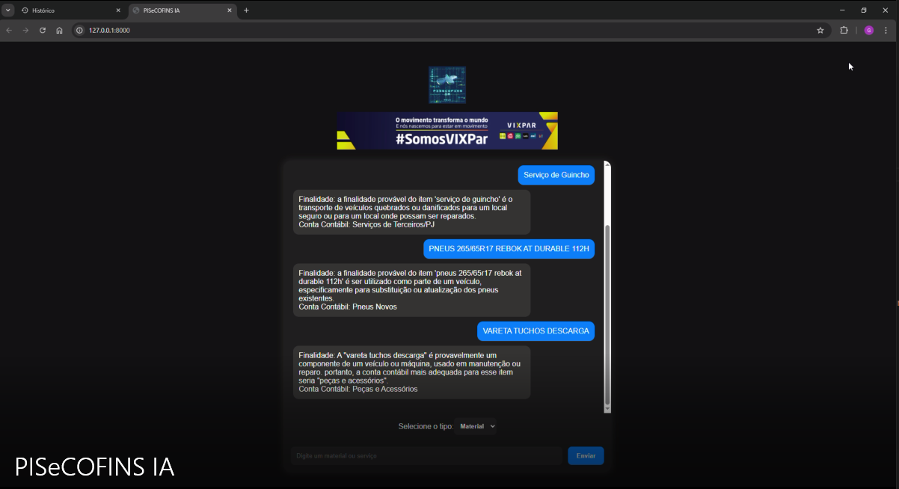

📌 Sobre o Projeto
O PisCofinsAI é um projeto que utiliza Inteligência Artificial para auxiliar na tomada de créditos tributários, e na análise de materiais e serviços prestados, fornecendo automaticamente a conta contábil adequada para cada item ou serviço.
O objetivo principal é melhorar a tomada de decisão sobre créditos de PIS e Cofins, impostos federais que impactam diretamente no fluxo de caixa da empresa. Além de auxiliar o usuário na correta classificação contábil, o que é crucial para gestão de gastos de toda empresa e filiais.
🚀 Objetivo do Projeto
- Ganhar eficiência operacional.
- Evitar riscos fiscais.
- Melhorar a gestão do fluxo de caixa.
🧠 Tecnologias Utilizadas
- Python para processamento de dados.
- LLMs (Large Language Models) para análise semântica de materiais e serviços.
🔍 Funcionalidades
- Prompt pelo usuário informando o material ou serviço comprado.
- Identificação automática para auxiliar nos itens que geram ou não crédito de PIS/Cofins.
- Sugestão de conta contábil incluída para cada tipo de operação.
- Consideração de regras específicas por centro de custo/empresa.
📊 Exemplo de Uso
- O usuário faz um prompt e o agente analisa a solicitação.
- O agente PisCofinsAI processa as informações.
- O sistema sugere automaticamente a conta contábil correta e auxilia se há ou não crédito de PIS/Cofins.
- O resultado pode ser utilizado diretamente na contabilidade ou no sistema fiscal com integrações.
🌟 Benefícios
- Redução de erros humanos.
- Economia de tempo em análises repetitivas.
- Confiabilidade na tomada de decisão tributária.
- Apoio estratégico na gestão do fluxo de caixa.
📸 Captura do Projeto
Utilização do agente em tempo real
🔗 Link do Projeto no GitHub
Você pode acessar o código-fonte do projeto clicando no link abaixo:
Acessar PisCofinsAI no GitHub📌 Status do Projeto
🔹 Em desenvolvimento e em constante evolução.
Próximas etapas:
- Integração direta com bancos de dados corporativos.
- Implementação de machine learning para recomendações mais assertivas.
- Interface web para maior usabilidade.
👨💻 Autor
Projeto desenvolvido por Gabriel de Oliveira Silva, estudante de Tecnologia da Informação com experiência em contabilidade, sistemas ERP (SAP) e projetos de automação com IA.